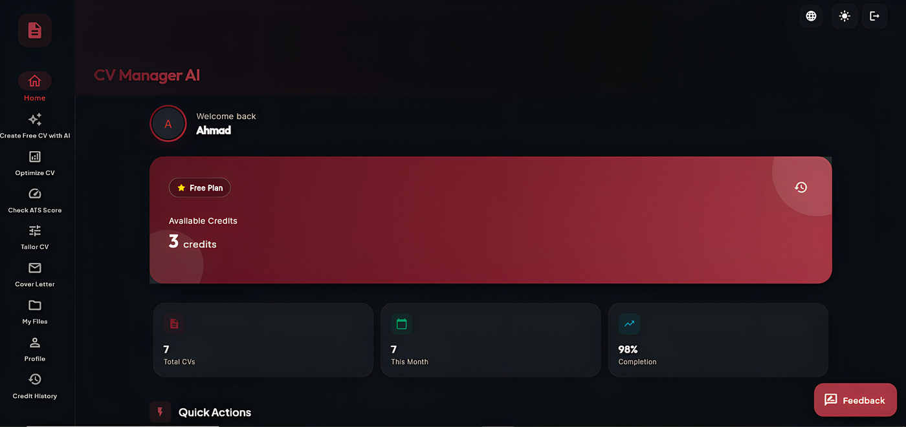

The #1 AI Resume Builder for ATS-Optimized CVs
Create a professional, recruiter-ready resume in under 60 seconds. Our AI resume builder writes your bullet points, optimizes for ATS, and tailors your CV to any job description. Get started for free — build your perfect career path today.

Designed for Success
Everything you need to stand out in the modern job market.
Instant CV AI Generation
Just tell us your role. Our CV AI generator writes professional bullet points, summaries, and skills tailored to your industry standards in seconds.
Learn How →ATS Optimized AI Resumes
Stop being ignored by bots. Our AI resume builder analyzes your CV against real ATS filters to ensure you're in the top 5% of candidates.
Learn How →Global AI CV Support
Create AI-powered resumes in English, Arabic (RTL), French, German, Italian, and 8+ other languages. The most versatile CV AI on the market.
Learn How →Job-Specific AI Tailoring
Paste a job description and our CV AI will automatically adjust your resume, highlighting the most relevant skills for that specific role.
Learn How →AI Cover Letter Writer
Generate matching cover letters with our AI resume generator that resonate with recruiters and complement your new CV perfectly.
Learn How →How It Works
Input Details
Enter your basic info or paste your old resume to get started.
AI Refinement
Our AI optimizes your keywords and professional phrasing.
Launch & Land
Download your PDF and start applying with confidence.
Why is ATS optimization critical for your AI Resume?
90% of Fortune 500 companies use Applicant Tracking Systems to filter candidates. If your AI CV lacks the right keywords or format, it may never reach a human. CV Manager AI bridges this gap automatically, making it the best free CV AI for job seekers.
Tailored for Every Profession
Our AI understands the specific requirements for your industry.
AI Resume for Software Engineers
Highlight your tech stack, GitHub contributions, and project impact with industry-standard technical phrasing.
Learn How →AI Resume for Teachers
Optimize your teaching philosophy and classroom results for school district Applicant Tracking Systems.
Learn How →AI Resume for Nurses & Healthcare
Ensure your certifications and clinical experience stand out to healthcare recruiters immediately.
Learn How →Advanced AI Career Technology
The science of success behind CV Manager AI.
Natural Language Processing in Recruitment
Our platform leverages state-of-the-art Natural Language Processing (NLP) models to analyze job descriptions and candidate profiles. Unlike traditional templates, CV Manager AI doesn't just format your data; it understands the semantic meaning behind your professional experiences. This allows the AI to suggest achievements that resonate with specific industry standards and recruitment expectations for 2026.
By utilizing Large Language Models (LLMs), we can provide contextual suggestions that go beyond simple keyword matching. The AI identifies core competencies and soft skills that are often missed by human writers, ensuring that every bullet point on your resume serves a clear strategic purpose.
The Algorithmic Approach to ATS Scoring
Applicant Tracking Systems (ATS) are used by over 95% of Fortune 500 companies. These systems rank candidates based on complex algorithms that look for specific data structures and keyword densities. CV Manager AI reverse-engineers these preferences to ensure your CV is not just "readable" by a bot, but highly ranked.
We focus on three primary pillars of ATS success: Parsing Accuracy, Keyword Optimization, and Semantic Relevance. Our system verifies that every heading, date format, and list is structured in a clean, standardized way that is guaranteed to pass through filters at top-tier companies like Google, Amazon, and Microsoft.
Our Mission & Story
Why we built CV Manager AI.
At CV Manager AI, we believe that high-quality career tools should be accessible to everyone, regardless of their budget or background. The modern job search is increasingly dominated by algorithms and automated filters, which can often overlook talented individuals due to simple formatting errors or keyword mismatches.
Our team of recruitment experts and AI engineers developed this platform to bridge the gap between human talent and digital parsers. By combining the latest in Large Language Models with deep industry insight, we provide a tool that doesn't just "build resumes"—it empowers careers.
We are committed to continuous improvement, ensuring that our AI remains updated with the latest 2026 recruitment trends and ATS standards. Thank you for choosing CV Manager AI to be part of your professional journey.
Frequently Asked Questions
Learn more about how CV Manager AI helps your career.
How can I create a CV for free using AI?
Simply launch the CV Manager AI app, enter your professional details or paste your old resume. Our AI generator will instantly write high-quality bullet points and summaries tailored to your target role.
Is CV Manager AI really free?
Yes! You can generate, optimize, and download your CV as a professional PDF for free. We believe everyone deserves access to top-tier career tools.
Does this AI resume builder support ATS?
Absolutely. Our templates and AI-written content are specifically designed to be highly readable by Applicant Tracking Systems (ATS), helping you pass the initial bot filters.
Can I create a cover letter with the AI?
Yes, CV Manager AI includes a smart cover letter generator that matches your resume's tone and highlights your best achievements for the specific job you're applying for.
Tailored for Your Industry
Get a CV that speaks the language of your specific field.
Trusted by 12,840+ Job Seekers
Real results from professionals who landed interviews at top global companies.
“I sent out 20 applications with my old CV and got zero callbacks. After using CV Manager AI, I landed 4 interviews in the first week at major tech firms. The ATS optimization is genuinely game-changing.”
“As a non-native English speaker, writing a professional CV felt impossible. CV Manager AI wrote better, more impactful bullet points than any expensive consultant I hired. It's an essential tool.”
“I was switching careers from finance to data. The AI tailored my CV to highlight my transferable skills perfectly. Got an offer within 3 weeks. I can't recommend this enough for career pivots.”
See the Difference AI Makes
From a generic CV to an ATS-scoring powerhouse — in under 60 seconds.
Experience
• Responsible for managing projects
• Helped with marketing campaigns
• Did customer service tasks
ATS Score: 42% 😞
Professional Experience
• Led cross-functional teams of 8, delivering 3 projects on time, reducing costs by 22%
• Launched 5 paid campaigns generating $180K revenue in Q3 2026
• Resolved 95% of customer issues within SLA, achieving 4.8/5 CSAT score
ATS Score: 96% 🚀